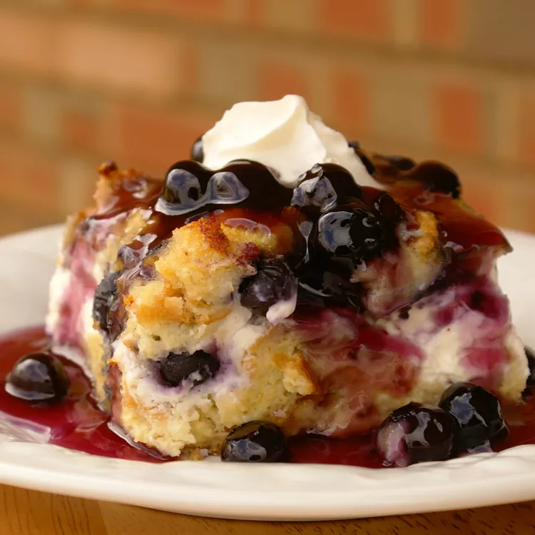

Overnight Blueberry French Toast

What's special about the Overnight Blueberry French Toast?
Both healthy and very nutritious!
Enjoy this breakfast meal for any occasion.
Ingredients
French Toast Casserole
- 12 slices day-old bread, cut into 1-in cubes
- 2 (8 oz) packages cream cheese, cut into 1-in cubes
- 1 cup fresh blueberries
- 12 eggs, beaten
- 2 cups milk
- 1 tsp vanilla extract
- 1/3 cup maple syrup
Blueberry Sauce
- 1 cup white sugar
- 1 cup water
- 2 tblsp cornstarch
- 1 cup fresh blueberries
- 1 tblsp butter
Steps
- Prepare casserole: Lightly grease a 9x13-inch baking dish.
Arrange 1/2 of the bread cubes in the dish and top with
cream cheese cubes. Sprinkle blueberries over the cream
cheese, then top with remaining bread cubes.
- Whisk eggs, milk, vanilla extract, and syrup together in a
large bowl until well-combined; pour over the bread cubes.
Cover and refrigerate overnight.
- Remove casserole from the refrigerator about 30 minutes
before baking. Preheat the oven to 350 degrees F
(175 degrees C).
- Bake casserole in the preheated oven, covered, for 30 minutes.
Uncover, and continue baking until center is firm and surface
is lightly browned, about 25 to 30 minutes.
- Meanwhile, prepare blueberry sauce: Mix sugar, water, and
cornstarch together in a medium saucepan; bring to a boil and
cook, stirring constantly, 3 to 4 minutes. Stir in blueberries,
reduce heat to low, and simmer until all the blueberries burst,
about 10 minutes. Stir in butter.
- Serve portions of casserole on plates and pour warm syrup over top.
Back to Main Page